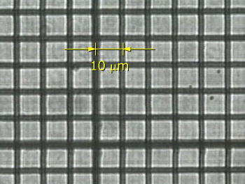
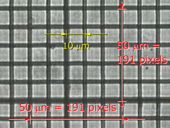

さて，前に示した条件で，ミクロメータ，を観察してみましょう．

この画像は，一区切り，１０ミクロン，のミクロメータの画像です．
先に述べたように，
顕微鏡の倍率：４０倍
カメラ：ワテック
で撮影しました．
PCへの取り込みは，カノープスのボードを使いました．
実際の画像は，640x480，ですが，トリミングしてあります．
さて，では，どのくらいのピクセル数かを計ってみましょう．
計測には，ImageJ，Photoshop，などを使ってみましょう．

すると，縦横ともに，１９１ピクセルとなります．
では，計算上はどうなるでしょう？
| 計算 | 横 | 縦 | |
| 実際の大きさ | ５０ ミクロン | ５０ ミクロン | |
| 拡大率 | ４０倍 | ４０倍 | |
| 像の大きさ | 実際の大きさ × 拡大率 | ２ ミリ | ２ ミリ |
| ＣＣＤの有効画素数 | ７６８ | ４９４ | |
| セルサイズ | ８.４ ミクロン | ９.８ ミクロン | |
| ＣＣＤのサイズ | 画素数 × セルサイズ | ６.４５ ミリ | ４.８４ ミリ |
| ピクセル数 | ６４０ | ４８０ | |
| ５０ミクロンのピクセル数 | 像の大きさ ÷ ＣＣＤのサイズ ×ピクセル数 | １９８.２ | １９８.１ |
となります．
まあ，あっていますが，７ピクセルほど違いますね．．．３％ほど．．．
この違いは．．．．すいません，わかりません．．
どなたか，ご存じの方がおりましたら，連絡ください．
とにかく．．．計算上からも，ちょっとの誤差はありますが，PCに取り込んだ場合のサイズを見積もることができました．
実際には，あらかじめミクロメータの画像を取り込んでおいて，キャリブレーションを行いますが，このように，光学的に倍率を見積もることも原理を理解する上では重要です．
さて，次は，実際の画像をPCに落とし込む場合の注意点を説明したいと思います．